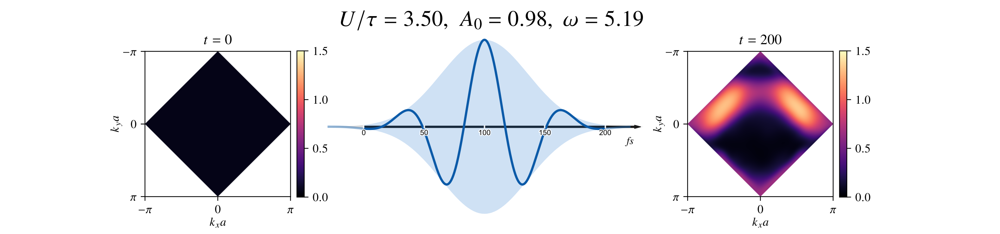

Toward the Thermodynamic Limit: Neural Operators for Non-equilibrium Dynamics of Mott Insulators (Anandkumar Group)
Developed a Fourier Neural Operator to model nonequilibrium dynamics in strongly correlated systems. Trained on small lattices, the model demonstrates zero-shot generalization to systems exceeding 1024×1024, producing physically consistent predictions far beyond the tractable regime of conventional solvers.